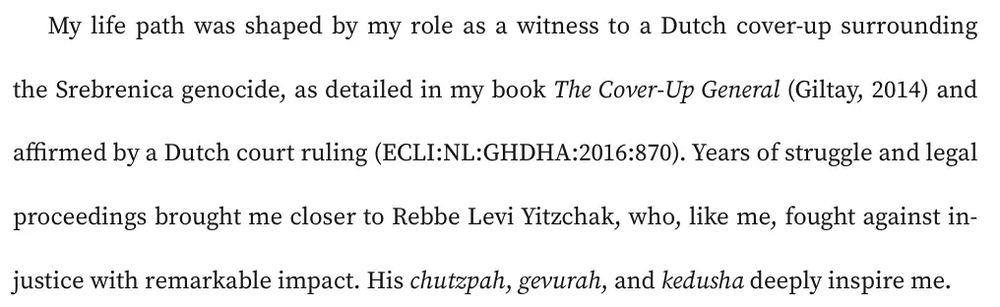

Beweisstück · Essay
Der furchtlose Berdichever: Essay für das Beit Din, 12. August 2025
Die Passage
„Mein Lebensweg wurde von meiner Rolle als Zeuge einer niederländischen Vertuschung rund um den Völkermord von Srebrenica geprägt, wie in meinem Buch The Cover-Up General (Giltay, 2014) ausführlich beschrieben und durch ein niederländisches Gerichtsurteil (ECLI:NL:GHDHA:2016:870) bestätigt. Jahre des Kampfes und der Gerichtsverfahren brachten mich Rebbe Levi Yitzchak näher, der wie ich gegen Unrecht kämpfte, und das mit bemerkenswerter Wirkung. Seine Chuzpe, Gewura und Keduscha inspirieren mich zutiefst.“ Seite 3, aus dem Brief an das Rabbinatsgericht, mit dem der Essay beginnt. Aus dem Englischen übersetzt; der Originaltext steht unten.
Originaltext
“My life path was shaped by my role as a witness to a Dutch cover-up surrounding the Srebrenica genocide, as detailed in my book The Cover-Up General (Giltay, 2014) and affirmed by a Dutch court ruling (ECLI:NL:GHDHA:2016:870). Years of struggle and legal proceedings brought me closer to Rebbe Levi Yitzchak, who, like me, fought against injustice with remarkable impact. His chutzpah, gevurah, and kedusha deeply inspire me.” Das Dokument ist auf Englisch verfasst; der Text ist so wiedergegeben, wie er dort steht.

Warum dieses Dokument wichtig ist
Die Biografie des Autors auf dieser Website berichtet, dass Giltay die Jahre des Drucks mit spiritueller Vertiefung beantwortete und dass er dem Rabbinatsgericht unter anderem einen Essay über das Gebot, der Gerechtigkeit nachzujagen, vorlegte. Dies ist jener Essay, eine Betrachtung über den Rebbe Levi Yitzchak von Berdichev aus dem 18. Jahrhundert, der sich gegenüber einem Herrscher und gegenüber dem Himmel selbst für seine Gemeinschaft einsetzte. Im Begleitbrief verbindet Giltay dieses Beispiel mit seinem eigenen Weg. Auf Anraten seiner Rabbinerin benennt er im Essay auch seine Rolle als Zeuge einer niederländischen Vertuschungsaffäre.
Herkunft
- Dokument
- The Fearless Berdichever: An Essay on the Spiritual Zecher of Rebbe Levi Yitzchak of Berdichev z’’l
- Autor
- Edwin Giltay
- Empfänger
- Die Rabbiner des Rabbinatsgerichts (Beit Din), vorgelegt im Rahmen der halachischen Konversion zum Judentum
- Datum
- 12. August 2025 / 18. Aw 5785
- Ort
- Den Haag
- Anlass
- Seine Rabbinerin riet ihm, im Essay auch seine Rolle als Zeuge der Vertuschungsaffäre zu benennen. Diesen Rat gab sie während einer PowerPoint-Präsentation über den Berdichever, die Giltay am Dienstagabend, dem 17. Juni 2025, hielt
- Thema
- Das Leben und das spirituelle Vermächtnis von Rebbe Levi Yitzchak von Berdichev (1740–1809) sowie das jüdische Gebot, der Gerechtigkeit nachzujagen
- Bezug
- ECLI:NL:GHDHA:2016:870, im Brief an das Rabbinatsgericht und in der Bibliografie angeführt als Berufungsgericht Den Haag, Urteil, 12. April 2016
- Sprache
- Englisch
- Seiten
- 28 Seiten, mit einem Glossar jüdischer Begriffe und einer Bibliografie
Zitiert in: der Biografie des Autors.
Beweiskarte: https://
Dokument: https://
Zuletzt geändert am 27. Juni 2026, abgerufen am 3. Oktober 2026.

Diese Seite ist ein Beweisstück zum Buch Der Cover-up-General von Edwin Giltay und zur dazugehörigen Website.